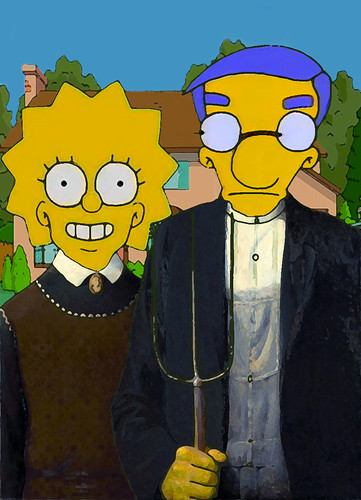

Welcome to the second page!
A parody version of Grant Wood's American Gothic painting with inspiration from my favorite TV show.

Click here to go back to the first page.
First Page
Click here to go the third page.
Third Page